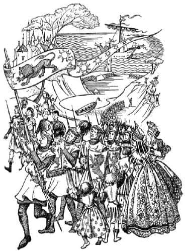
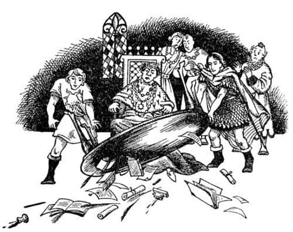
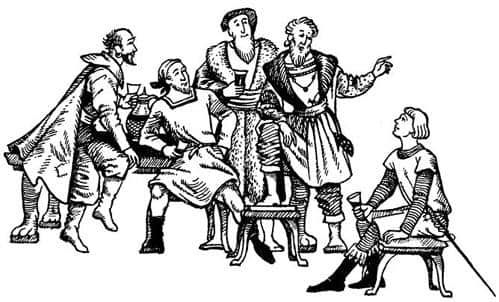

Caspian’ın Orada Yaptıkları
Ertesi sabah Lord Bern misafirlerini erkenden kaldırdı ve kahvaltıdan sonra Caspian’dan bütün adamlarının tam teçhizat hazırlanmalarını emretmesini istedi, “Hepsinden önemlisi” diye ekledi, “her şey, tüm dünyanın gördüğü, soylu krallar arasındaki büyük bir savaşın seherindeymiş gibi düzenli yapılsın.” İsteği yerine getirildi ve Caspian, arkadaşları, Bern ve onun birkaç adamı üç ayrı gemiyle Dar Liman’a doğru yola çıktılar. Kralın bayrağı, gemisinin pupasında dalgalanıyordu ve borazancısı da yanındaydı.
Dar Liman’da mendireğe geldiklerinde Caspian büyük bir kalabalığın onları karşılamak üzere toplanmış olduğunu gördü. “Dün geceki haberciyi bunun için göndermiştim” dedi Bern. “Bunların hepsi arkadaşlarım ve hepsi de dürüst insanlardır.” Caspian karaya adımını atar atmaz kalabalık, “Narnia! Narnia! Yaşasın Kral” diye bağırıp hurra çekmeye başladı. Aynı anda – bu da Bern’in habercisinin marifetiydi – şehrin birçok yerinden çan sesleri yükselmeye başladı. Sonra Caspian sancağını çektirip borusunu çaldırdı ve tüm adamları kılıçlarını çekip yüzlerine ciddi ifadeler vererek yola koyuldu; öyle sert yürüyorlardı ki yer sarsılıyordu. Zırhları öyle parlıyordu ki (güneşli bir sabahtı) kimse onlara birkaç saniyeden fazla bakamıyordu.
Başlangıçta, alkışlayanlar sadece Bern’in habercisi tarafından uyarılmış ve neler olup bittiğinden haberdar insanlardı. Sonra onlara çocuklar da katıldı, çünkü hepsi askerleri severdi ve bu pek az gördükleri bir şeydi. Sonra bütün öğrenciler de katıldı, çünkü onlar da askerleri severdi ve ne kadar çok gürültü ve kargaşa yaşanırsa, okulun o sabah açılmama ihtimalinin o kadar artacağına inanıyorlardı. Sonra yaşlı kadınlar başlarını pencerelerden ve kapılardan çıkarıp gevezelik etmeye ve alkışlamaya başladı, çünkü bir kral geliyordu; onun yanında bir valinin sözü mü olurdu ki? Tüm genç kadınlar da aynı nedenle alaya katıldı. Bunun bir nedeni de Caspian, Drinian ve diğerlerinin çok yakışıklı olmasıydı. Sonra bütün genç erkekler, genç kadınların neye baktığını anlamak için geldiler ve böylece Caspian kalenin kapılarına ulaştığında bütün şehir bağırıyordu; Gumpas hesaplar, kâğıtlar, yasalar ve düzenlemelerle uğraşıp her şeyi karıştırdığı kalesinden gürültüyü duymuştu.

Kalenin kapısında Caspian’ın borazancısı boruyu öttürerek bağırdı, “Sadık ve sevgili hizmetkârı Issız Adalar valisini ziyarete gelen Narnia Kralı için kapıyı açın.” O günlerde adalarda her şey baştan savma yapılırdı. Yan tarafta küçük bir kapı açıldı ve kafasında miğfer yerine pis ve eski bir şapkayla elinde paslı ve eski bir mızrak olan pespaye bir adam çıktı. Önünde parıldayan şekillere gözlerini kırpıştırarak baktı. “…eğerli …aliyi …öremezsiniz” diye mırıldandı. (“Değerli valiyi göremezsiniz”i bu şekilde söylüyordu). “…er ayın …kinci cumartesi akşamı saat …okuz ile on …rası hariç, randevusuz …örüşme yapılamaz.”
“Narnia Kralı’nın önünde şapkanı çıkar köpek!” diye gürledi Lord Bern ve eldivenli eliyle öyle bir tokat attı ki adamın şapkası başından uçtu.
“…ey? N’oluyor?” diye konuşmaya başladı adam, ama kimse onu dinlemiyordu. Caspian’ın adamlarından ikisi yan kapıdan geçtiler, kilitler ve kapı kollarıyla biraz uğraştıktan sonra (çünkü her şey paslanmıştı) kapının iki kanadını da sonuna kadar açtılar. Sonra Kral ve yandaşları avluya girdi. Burada valinin muhafızlarından bir kısmı tembel tembel uzanmaktaydı, birçoğu (ağızlarını silerek) kapılardan dışarıya fırladı. Zırhları utanç verici durumda olmasına rağmen neler olduğunu bilseler, ya da mecbur kalsalar, hepsi de kavga edebilecek adamlardı; bu yüzden o an çok tehlikeli bir andı. Caspian onlara düşünecek zaman vermedi.
“Yüzbaşı nerede?” diye sordu.
“Benim, aşağı yukarı, yani ne dediğimi anlarsan” dedi zırhı olmayan genç bir adam. Lütfeder gibi konuşuyordu.
“Arzumuz” dedi Caspian, “Issız Adalar’a yaptığımız kraliyet ziyaretinin, sadık insanlarımız tarafından dehşetle değil, mutlulukla karşılanmasıdır. Eğer böyle olmasaydı adamlarınızın zırh ve silahlarının durumu hakkında bir şeyler söylerdim. Onun için affedildin. Bir fıçı şarap açılmasını emret ki, adamların sağlığımıza içsinler. Yarın öğlen onları burada, bu avluda, serseri gibi değil, silah altındaki iyi birer asker gibi görmek istiyorum. Bunu yap, ya da hoşnutsuzluğumuzun yaratacağı sıkıntılara katlanmaya hazır ol.”
Yüzbaşı şaşkınlıkla baktı, ama Bern anında, “Kral için üç hurra” diye bağırdı ve başka hiçbir şey anlamasalar da, bir fıçı şarabın ne anlama geldiğini bilen askerler buna katıldılar. Caspian adamlarının büyük bir kısmının avluda kalmasını emretti. Kendisi, Bern, Drinian ve diğer dört kişiyle beraber salona girdi.
Salonun diğer ucundaki masanın ardında, etrafında bir sürü kâtiple Issız Adalar’ın değerli valisi oturuyordu. Gumpas kızıl saçları kırlaşmış, aksi görünümlü bir adamdı. Yabancılar girerken onlara bir göz attı ve sonra kâğıtlarına eğilip kurulmuş bir saat gibi, “Her ayın ikinci cumartesi akşamı saat dokuz ile on arası hariç, randevusuz görüşme yapılmaz” dedi.
Caspian, başıyla Bern’e işaret verdi ve kenara çekildi. Bern ve Drinian birer adım öne çıktılar; her biri masanın bir ucunu tuttu. Masayı kaldırıp salonun bir kenarına fırlattılar. Belgeler, mühür mumları, kalemler, hokkalar, dosyalar ve mektuplar etrafa saçıldı. Sonra kabaca değil, ama sanki elleri çelikten birer kıskaçmış gibi sıkıca tutarak Gumpas’ı sandalyesinden kaldırıp yüzü sandalyeye dönük olarak yaklaşık bir buçuk metre öteye koydular. Caspian hemen sandalyeye oturdu ve kılıcını dizlerinin üzerine yatırdı.

“Lordum” dedi, gözlerini Gumpas’a dikerek, “bize beklediğimiz misafirperverliği göstermediniz. Ben Narnia Kralı’yım.”
“Yazışmalarda bunun hakkında bir şey yoktu” dedi Vali. “Kâtibimin notlarında da böyle bir şey yoktu. Bize böyle bir şey bildirilmedi. Her şey karmakarışık. Başvuruları incelemekten mutluluk…”
“Ayrıca biz değerli valinin yaptıklarını incelemeye geldik” diye devam etti Caspian. “Özellikle açıklanmasını beklediğim iki nokta var. İlk olarak, bu adaların Narnia Krallığı’na vereceği verginin ödendiğine dair herhangi bir evrak bulamadım ve bu yüz elli yıldır böyle sanırım.”
“Bu, gelecek ayki toplantıda ele alınacak bir sorun” dedi Gumpas. “Gelecek yılki ilk toplantıda adaların mali geçmişi hakkında rapor hazırlayacak bir soruşturma komisyonu kurulmasını isteyen biri olursa o zaman…”
“Aynı zamanda şunu da biliyorum ki” diye devam etti Caspian, “eğer vergi ödenmemişse bütün borcun Issız Adalar’ın valisinin kendi servetinden tahsil edilmesi gerekir, bu kanunlarımızda açıkça belirtilmiştir.”
Bunu duyar duymaz Gumpas gerçekten konuyla ilgilenmeye başlamıştı. “Ah, bu tamamıyla konu dışında” dedi. “Bu imkânsız bir şey. Ee… Majesteleri şaka yapıyor olmalı.”
İçinden bu davetsiz misafirlerden kurtulmanın bir yolu olup olmadığını merak ediyordu. Caspian’ın sadece bir gemisi ve bir gemi dolusu adamı olduğunu bilseydi şayet, o an için durumu idare eder ve geceleyin de onları kuşatarak öldürmeyi planlardı. Ancak dün boğazlardan bir geminin geçtiğini ve anladığı kadarıyla yoldaşlarına sinyal gönderdiğini görmüştü. O anda bunun kralın gemisi olduğunu anlamamıştı, çünkü sancağı dalgalandırıp altın aslanın görülmesini sağlayacak kadar rüzgâr yoktu. Böylece, beklemeye başlamıştı. Şimdi Caspian’ın tüm donanmasının Bernstead’de olduğunu sanıyordu. Birinin elliden az adamla Dar Liman’a yürüyüp adaları alması Gumpas’ın aklının ucuna bile gelmezdi; mesela o asla böyle bir şey yapmayı düşünmezdi.
“İkinci olarak” dedi Caspian, “egemenliğimizdeki ülkelerin eski gelenek ve göreneklerinin tersine, bu iğrenç köle ticaretinin buralarda yayılmasına neden izin verdiğini bilmek istiyorum.”
“Gerekliydi, kaçınılmazdı” dedi vali. “Sizi temin ederim ki adaların ekonomik gelişmesinin zorunlu bir parçasıydı. Şu andaki refah atılımımız ona bağlı.”
“Neden kölelere ihtiyacınız var?”
“İhraç etmek için Majesteleri. Genellikle Calormen’e satarız, başka pazarlarımız da var. Biz büyük bir ticaret merkeziyiz.”
“Bir başka deyişle” dedi Caspian, “onlara ihtiyacınız yok. Pug gibilerinin cebine para koymaktan başka ne gibi bir amaca hizmet ettiklerini söyler misin?”
“Majestelerinin genç yaşı” dedi Gumpas babacan görünmek isteyen bir gülümsemeyle, “düşünülmesi gereken ekonomik sorunları anlamasını gerçekten zorlaştırıyor. İstatistikler var, grafikler var…”
“Genç olabilirim ama” dedi Caspian, “inanıyorum ki köle ticaretinin içini dışını Vali’nin bildiği kadar iyi bilirim. Bunun adalara ekmek ya da et, bira ya da şarap, kereste ya da lahana veya kitaplar, müzik aletleri, atlar, zırhlar ya da sahip olmaya değecek herhangi bir şey kazandırmadığını görüyorum. Ancak bunları sağlasa da sağlamasa da bu ticaret durdurulmalı.”
“Ama bu, işleri tersine çevirmek olur” dedi vali soluğu kesilerek. “İlerleme ve gelişme hakkında hiçbir fikriniz yok mu?”
“Ben ilerlemenin de, gelişmenin de ne olduğunu çok ama çok iyi bilirim” dedi Caspian. “Narnia’da biz böylesine ‘çürüme’ deriz. Bu ticaret durmalı.”
“Böyle bir önlemin sorumluluğunu üzerime alamam” dedi Gumpas.
“İyi öyleyse” diye cevapladı Caspian, “seni görevinden alıyoruz. Lord Bern, buraya gelin.” Gumpas ne olduğunu anlayamadan Bern, elleri kralın elleri arasında diz çökmüş, Issız Adalar’ı Narnia’nın eski gelenek, görenek, hak ve kanunlarına göre yöneteceğine dair yemin ediyordu. Caspian, “Sanırım valilerden yeteri kadar çektik” diyerek Bern’i dük yaptı, Issız Adalar Dükü.
“Sana gelince Lordum” dedi Gumpas’a, “vergi borcunu affediyorum. Sen ve yandaşların yarın öğleden önce, artık dükün malikânesi olan kaleyi terk etmiş olacaksınız.”
“Buraya bakın, bütün bunlar çok iyi ama” dedi Gumpas’ın kâtiplerinden biri, “siz centilmenler rol kesmeyi bırakıp biraz iş yapmaya ne dersiniz. Önümüzdeki sorun gerçekten—”
“Sorun” dedi Dük, “sen ve bu ayaktakımının gerisinin kırbaçlanarak mı yoksa kırbaçlanmadan mı kaleyi terk edeceği. Seçimi siz yapın.”
Tüm bunlar hoş bir biçimde çözüme ulaştırıldığında, Caspian iyi tımarlanmış olmamalarına rağmen kalede bulunan birkaç atın hazırlanmasını emretti. Bern, Drinian ve diğer birkaç kişiyle atlarla şehre inip köle pazarına gittiler. Bu, limanın yakınında uzun ve alçak bir binaydı ve içeride karşılaştıkları manzara açık artırmaya benziyordu; yani büyük bir kalabalık vardı ve bir platformun üzerindeki Pug yüksek ve bet bir sesle haykırıyordu:
“Evet beyler, yirmi üçüncü parti. Terebinthialı mükemmel bir tarım işçisi, madenlerde ya da kadırgalarda çalışabilir. Yirmi beş yaşın altında. Ağzında tek çürük yok. İyi, güçlü bir adam. Gömleğini çıkar, Tacks, beyler görsün. Şu kaslara bakın. Şu göğse bakın. Köşedeki beyden on Ay Lirası. Şaka yapıyor olmalısınız, efendim. On beş! On sekiz! Yirmi üçüncü partiye on sekiz verildi. On sekizden fazla veren var mı? Yirmi bir. Teşekkürler efendim. Yirmi bir verildi…”
Pug platforma çıkan zırhlı şekilleri gördüğünde durup, şaşkınlıkla baktı.
“Herkes Narnia kralının önünde diz çöksün” dedi Dük.
Herkes dışarıdaki atların toynak seslerini, koşumlarının şıkırtısını ve birçoğu da kaledeki yaşananları duymuştu. Çoğunluğu emre uydu. Uymayanlar yanındakiler tarafından çökertildi. Bazıları alkışladı.
“Aslında soylu kişiliğimize dokunmanın cezasını yaşamınla ödemelisin Pug” dedi Caspian, “ama cehaletinden dolayı affedildin. Egemenliğimizdeki tüm topraklarda köle ticareti on beş dakika önce yasaklandı. Pazaryerindeki tüm köleleri özgür ilan ediyorum.”
Kölelerin tezahüratlarını susturmak amacıyla elini kaldırıp devam etti, “Arkadaşlarım nerede?”
“O sevgili küçük bayan ve nazik genç centilmen mi?” dedi Pug, kralın gözüne girmeye çalışan bir gülümsemeyle. “Onları hemen kapıştılar—”
“Buradayız, buradayız Caspian” diye bağırdı Lucy ve Edmund beraberce, “Hizmetinizdeyim, efendim” diye seslendi Bastıbacak bir başka köşeden. Hepsi satılmışlardı, ama onları satın alan adam başka köleler almak için pazarda dolaştığından henüz oradan ayrılmamışlardı. İnsanlar üçünün çıkabilmesi için kalabalığın arasında yol açtı. Caspian’la çocuklar candan bir şekilde el sıkışıp kucaklaştılar. Calormenli iki tacir hemen yanlarına geldi. Calormenliler’in yüzleri esmerdir ve uzun sakalları vardır. Uzun elbiseler ve turuncu sarıklar giyerler ve bilge, varlıklı, kibar, ciddi ve köklü insanlardır. Caspian’a nazikçe selam verdiler ve uzun uzun iltifatlar ettiler – refah çeşmelerinin, tutumluluk ve erdem bahçelerini sulaması temennisinde bulundular ve buna benzer şeyler söylediler – ama kuşkusuz tüm istedikleri ödedikleri paralardı.
“İşte adil olan bu, Beyler” dedi Caspian. “Bugün köle satın alan her adam parasını geri almalıdır. Pug, aldıklarını son minimine kadar getir.” (Bir minim bir Ay Lirası’nın kırkta biridir.)
“Majesteleri beni sefalete mi terk etmek istiyor?” diye sızlandı Pug.
“Tüm yaşamını insanların kalplerini kırarak geçirdin” dedi Caspian “ve sen sefalete düşsen bile, dilenci olmak köle olmaktan daha iyidir. Diğer arkadaşım nerede?”
“Ah, o mu?” dedi Pug. “Al onu, bu çok da iyi olur. Elimden çıktığına çok memnunum. Doğduğum günden beri pazarda onun gibi bir uyuşuk görmedim. Sonunda onun fiyatını beş Ay Lirası’na indirdim, yine de kimse almadı. Diğer sattığım kölelerin yanında bedava vermek istedim yine de kimse istemedi. Dokunmadılar. Bakmak bile istemediler. Tacks, Somurtkan’ı getir.”
Böylece Eustace getirildi, gerçekten de somurtkan görünüyordu; kimse köle olarak satılmak istemezdi, ama kimsenin satın almayacağı türden bir köle olmak belki daha da sinir bozucuydu. Eustace, Caspian’a yaklaştı ve “Görüyorum ki her zaman olduğu gibi bizler hapisteyken sen bir yerlerde eğleniyordun. Sanırım Britanya Konsolosluğu’nu bile bulamamışsındır. Eminim orayı aramadın bile.” dedi.
O akşam Dar Liman Kalesi’nde büyük bir ziyafet çektiler ve ardından Bastıbacak, herkese selam verip yatmaya gitmeden önce “Yarın gerçek macera başlayacak!” dedi. Ama aslında ne ertesi gün, ne de takip eden günlerde bu olamazdı. Çünkü artık tüm bilinen adaları ve denizleri arkalarında bırakmaya hazırlanıyorlardı ve hazırlıklar tam anlamıyla yapılmalıydı. Şafak Yıldızı boşaltıldı, sekiz at tarafından yuvarlak direkler üzerinde karaya çekildi ve her yeri en iyi gemi ustaları tarafından elden geçirildi. Sonra tekrar denize indirildi ve alabileceği kadar su ve erzakla dolduruldu; bu yirmi sekiz günlük erzak demekti. Bu da, Edmund’un hayal kırıklığıyla fark ettiği gibi, maceraya atılmadan önce, doğuya doğru gitmek için sadece iki hafta süreleri olduğu anlamına geliyordu.
Bütün bunlar olurken Caspian, Dar Liman’da bulabildiği en yaşlı gemi kaptanlarıyla, daha doğudaki ülkeler hakkında bilgileri olup olmadığını ve hatta bir şeyler duyup duymadıklarını öğrenmek amacıyla sohbet etme şansını kaçırmıyordu. Kaledeki fıçılarca birayı kır sakallı, mavi gözlü, fırtına yemiş adamlara içirdi ve karşılığında bir sürü hikâye dinledi. Ancak en ciddi görünenler bile Issız Adalar’ın ötesinde hiçbir ülke bilmiyorlardı. Birçoğu daha fazla doğuya giderlerse karanın olmadığı, dünyanın kenarında girdap gibi dönen, kaynayan denizlere ulaşacaklarını düşünüyordu: “Orası, sanırım Majestelerinin dibe battıkları yer olacak.” Gerisi, başsız insanlar, yüzen adalar, girdaplar ve suyun üzerinde yanan ateşler hakkında çılgınca hikâyeler anlattı. Sadece birisi Bastıbacak’ı sevindirecek bir şekilde, “Onun ötesinde Aslan’ın ülkesi var, ama orası, dünyanın sonunun ötesinde ve oraya ulaşamazsınız” dedi. Ama adamla konuştuklarında, bunun yalnızca babasından duyduğu bir hikâye olduğunu söyleyebildi.

Bern, altı arkadaşının doğuya doğru yelken açtığını ve onlardan bir daha haber alınamadığını söyledi. Bunu, Caspian’la birlikte Avra’nın en yüksek noktasında ayakta durmuş doğudaki okyanusa doğru bakarlarken söylemişti. “Sabahları hep buraya çıkardım” dedi Dük, “şafağı seyrederdim, bazen sadece bir iki mil ötedeymiş gibi görünürdü. Arkadaşlarımı düşünür ve ufkun ardında gerçekten ne olduğunu merak ederdim. Büyük bir olasılıkla hiçbir şey olmamıştır onlara, ama arkada kaldığım için her zaman biraz utanmışımdır. Yine de Majestelerinin gitmemesini isterdim. Size burada ihtiyacımız olabilir. Köle pazarının kapanışıyla dengeler bozulacaktır; gelecekte Calormen’le savaş görüyorum ben. Kralım, tekrar düşünün.”
“Bir yeminim var, Dük” dedi Caspian. “Aksi halde Bastıbacak’a ne derim?”